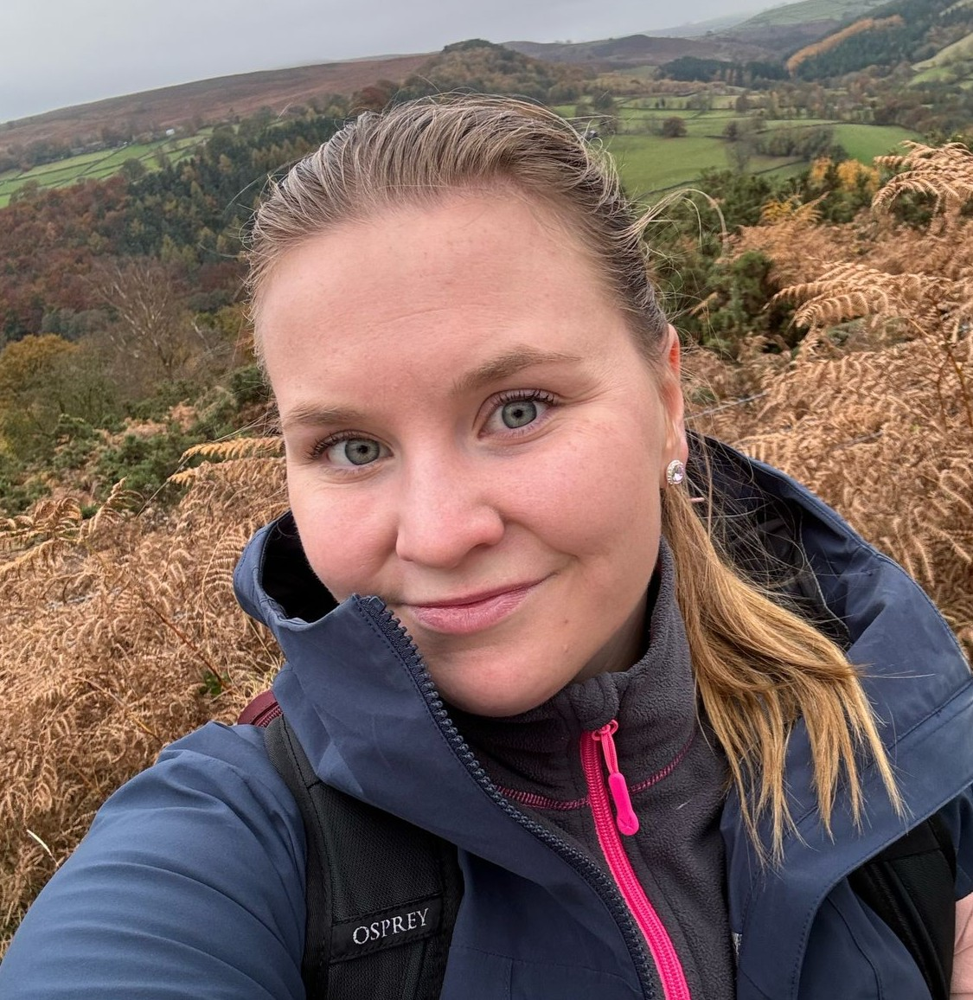

Mikä on VibeXplorers?
VibeXplorers tarjoaa lapsille ja nuorille mahdollisuuden kokeilla eri urheilulajeja oikeissa tapahtumissa – ilman pitkäaikaista sitoutumista. Seuroille tuomme uusia harrastajia, lapsille elämyksiä.
Osallistuthan lyhyeen kyselyymme 👇
Haluamme ymmärtää lasten ja nuorten sekä vanhempien näkökulmia liikunnan harrastamiseen – mikä estää osallistumista ja mikä innostaa liikkeelle. Kyselyyn vastaaminen vie vain muutaman minuutin ja auttaa meitä rakentamaan parempaa toimintaa. Kiitos! 🙌
Tulevat tapahtumat
Kuinka se toimii?
Me yhdistämme urheiluseurat ja tapahtumat kiinnostuneisiin lapsiin. Ilmoittaudu, kokeile ja löydä oma lajisi – ilman sitoumuksia.
Seuroille
Etsimme jatkuvasti uusia yhteistyöseuroja. Saat näkyvyyttä, uusia harrastajia ja tukea tapahtumien markkinointiin meiltä.
Autathan meitä kehittämään uutta liikuntakulttuuria 👇
Kysely on suunnattu seuroille ja sen tarkoituksena on ymmärtää nykytilannetta: mitkä ovat haasteita uusien harrastajien tavoittamisessa ja millaisia tukitarpeita teillä on. Vastauksia hyödynnetään VibeXplorers-konseptin kehittämisessä yhteistyössä lajiliittojen ja urheiluyhteisön kanssa.
Keitä olemme?

Anniina Morelius
Olen energinen ja positiivinen tuotantotalouden diplomi-insinööri, jolla on vahva liikuntatausta ja intohimo tehdä merkityksellistä työtä. Ringette oli lajini 15 vuoden ajan, ja nykyään nautin liikunnasta monipuolisesti esimerkiksi jalkapallon, joogan ja kuntosalin parissa.
Minulle liikunta ei ole vain harrastus – se tuo energiaa, auttaa palautumaan ja antaa mahdollisuuden haastaa itseään. Haluan olla mukana luomassa uutta liikuntakulttuuria, jossa jokaisella lapsella ja nuorella on mahdollisuus löytää oma tapansa liikkua ja voida hyvin.
LinkedIn
Olli Syrjälä
Olen energinen diplomi-insinööri, joka on aina rakastanut urheilua – niin liikkumista kuin penkkiurheilua. Olen kiinnostunut monista lajeista, ja uskon, että monipuolisuus tekee liikunnasta erityisen innostavaa.
Nuorempana olin aktiivisesti mukana seuratoiminnassa juniorivalmentajana, tuomarina ja joukkueenjohtajana. Nyt kahden lapsen isänä haluan olla mukana rakentamassa maailmaa, jossa kaikilla lapsilla on mahdollisuus löytää liikunnan ilo samalla tavalla kuin itse sain nuorena kokea.
LinkedInOta yhteyttä
Haluatko kuulla lisää tai lähteä mukaan? Ota rohkeasti yhteyttä sähköpostitse: vibexhq@gmail.com